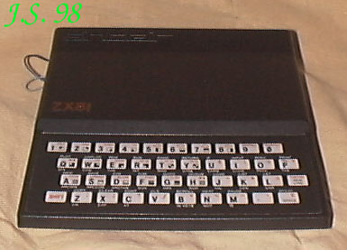
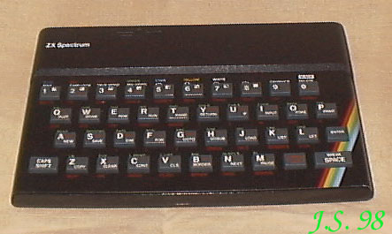
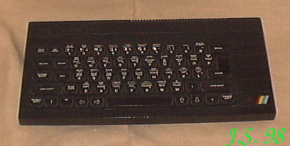
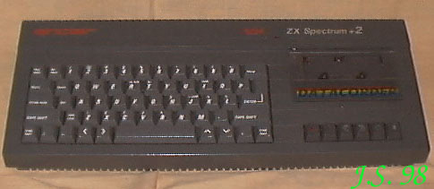
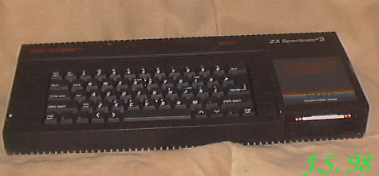

ZX Spectrum to pierwszy komputer który w pierwszej połowie lat osiemdziesiątych pojawił się u kolegi. Ileż to było radości! Złaziliśmy się do niego jak na przełomie lat 50-tych i 60-tych na telewizję do sąsiada. Najpierw były testy: PRINT 20^2 i sprawdzanie, czy sie nie pomylił. Potem pierwsze programy, gry itp. Uważam, że Jet Set Willy jest dobry tylko na Spectrum. Reszta to ersatz, jak kawa w 1982 r.ZX 81 Procesor Z80RAM 2kB rozszerzalna do 16 lub 64kBROM 8kBProcesor graficzny: brak.Rozdzielczość maksymalna:?Grafika: 16 znaków semigraficznych.Tryb tekstowy 32 kolumny w 24 wierszachWyjście video: RF modulatorPorty: gniazda magnetofonu, szyna krawędziowa.Zewnętrzne peryferia: magnetofon.Dźwięk: brak.ZX SPECTRUM Procesor Z80 / 3,5MHz.RAM 16 lub 48kBROM 16kBProcesor graficzny: brak.Rozdzielczość maksymalna: 256 X 192.Grafika: 8 kolorów o dwóch poziomach jasności każdy.Tryby tekstowe 32 kolumny w 24 wierszachWyjście video: RF modulatorPorty: gniazda magnetofonu, szyna krawędziowa.Zewnętrzne peryferia: magnetofon, ZX Interface 1, microdrive, drukarka, FDD.Dźwięk: jednokanałowy. Wbudowany głośnik.ZX SPECTRUM + Od poprzednika różnił się tylko rozbudowaną klawiaturą.Procesor Z80 / 3,5MHz.RAM 16 lub 48kBROM 16kBProcesor graficzny: brak.Rozdzielczość maksymalna: 256 X 192.Grafika: 8 kolorów o dwóch poziomach jasności każdy.Tryby tekstowe 32 kolumny w 24 wierszachWyjście video: RF modulatorPorty: gniazda magnetofonu, szyna krawędziowa.Zewnętrzne peryferia: magnetofon, ZX Interface 1, microdrive, drukarka, FDD.Dźwięk: jednokanałowy. Wbudowany głośnik.ZX SPECTRUM 128K+Tego komputera jeszcze nie mam w kolekcji. Jeszcze nie...Procesor Z80RAM 128kBROM 32kBProcesor graficzny: brak.Rozdzielczość maksymalna: 256 X 192.Grafika: 16.Tryby tekstowe 32 kolumny w 24 wierszachWyjście video: RF modulator, CV i RGB.Porty: gniazda magnetofonu, RS232, MIDI, klawiatura numeryczna, szyna krawędziowa.Zewnętrzne peryferia: magnetofon, microdrive, drukarka, FDD.Dźwięk: trzykanałowy, programowalny generator AY-8912. Wbudowany głośnik.ZX SPECTRUM +2 Procesor Z80RAM 128kBROM 32kBProcesor graficzny: brak.Rozdzielczość maksymalna: 256 X 192.Grafika: 16.Tryby tekstowe 32 kolumny w 24 wierszachWyjście video: RF modulator, CV i RGB.Porty: RS232, MIDI, szyna krawędziowa.Zewnętrzne peryferia: wbudowany magnetofon, microdrive, drukarka, FDD.Dźwięk: trzykanałowy, programowalny generator AY-8912. Wbudowany głośnik.ZX SPECTRUM +3 Procesor Z80RAM 128kBROM 32kBProcesor graficzny: brak.Rozdzielczość maksymalna: 256 X 192.Grafika: 8 kolorów o dwóch poziomach jasności każdy.Tryby tekstowe 32 kolumny w 24 wierszachWyjście video: RF modulator, CV i RGB.Porty: gniazda magnetofonu, RS232, MIDI, zewnętrzny FDD, szyna krawędziowa.Zewnętrzne peryferia: wbudowany FDD 3", microdrive, drukarka, FDD zewnętrzny.Dźwięk: trzykanałowy, programowalny generator AY-8912. Wbudowany głośnik. |